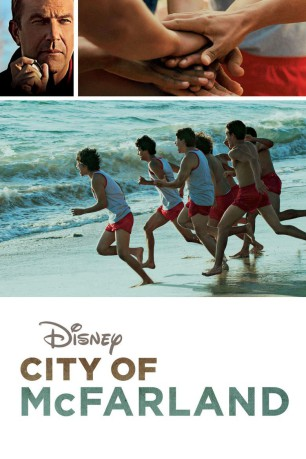
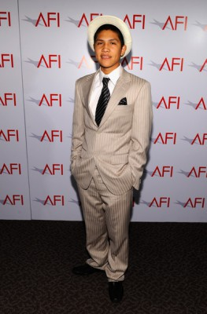
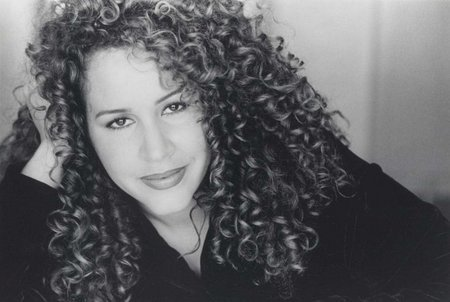
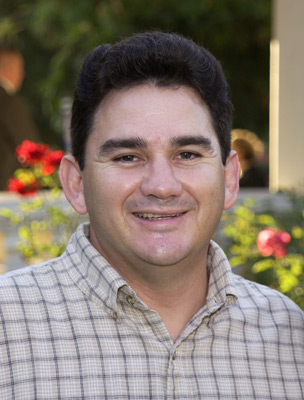
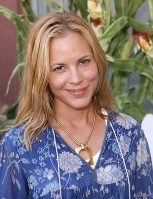
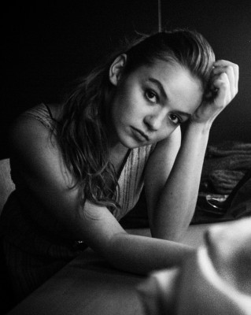
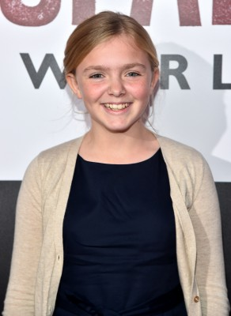
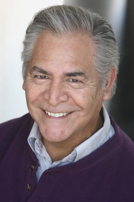
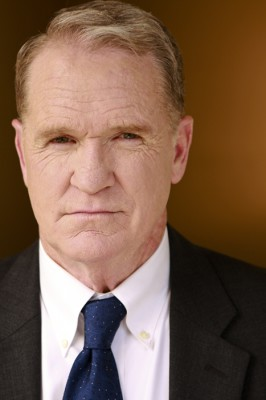
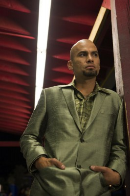

#1278 City of McFarland
Alternativ: McFarland, USA
 
 IMDB-Wertung: 7.4 / 10
IMDB-Wertung: 7.4 / 10  Metascore: 60
Metascore: 60 
Der High School Trainer Jim White (Kevin Costner) kommt an eine Schule im hauptsächlich von Latinos bewohnten McFarland, Kalifornien. Wirtschaftlich hat die Gegend den jungen Menschen nicht viel zu bieten, die Berufschancen der Schüler sind daher schlecht. White fällt es schwer, einen gemeinsamen Nenner mit den Schülern zu finden, bis ihm deren außergewöhnliche läuferische Fähigkeiten auffallen. Entgegen allen sozialen Schwierigkeiten entschließt er sich, eine Leichtathletikmannschaft auf die Beine zu stellen. Whites Ziel ist hoch: Er will seine Schüler zur Meisterschaft führen. Schritt für Schritt kommen der Trainer und seine Jungs dem großen Erfolg näher – und mit jedem Meter fühlt sich White in der neuen Umgebung heimischer…
Jahr: 2015
Dauer: 129 Minuten
FSK:
Land: USA Studio: Walt Disney Studios Motion PicturesTonspuren:
Untertitel: Deutsch,
Auflösung: 720p (1280x536) Größe: 4167 MB
Genre: Biographie, Drama, Sport
Regisseur:  Niki Caro
Niki Caro
Drehbuch: Christopher Cleveland, Bettina Gilois, Grant Thompson, Christopher Cleveland, Bettina Gilois
Soundtrack: Antonio Pinto
Darsteller:
 Kevin Costner als Jim White
Kevin Costner als Jim White- Ramiro Rodriguez als Danny Diaz
- Carlos Pratts als Thomas Valles
-  Johnny Ortiz als Jose Cardenas
- Rafael Martinez als David Diaz
- Hector Duran als Johnny Sameniego
- Sergio Avelar als Victor Puentes
-  Diana Maria Riva als Señora Diaz
- Omar Leyva als Señor Diaz
-  Valente Rodriguez als Principal Camillo
- Danny Mora als Sammy Rosaldo
-  Maria Bello als Cheryl White
-  Morgan Saylor als Julie White
-  Elsie Fisher als Jamie White
- Martha Higareda als Lupe
- Natalia Cordova-Buckley als Señora Valles
 Ben Hernandez Bray als Ernesto Valles
Ben Hernandez Bray als Ernesto Valles- Vanessa Martinez als Maria Marisol
- Rigo Sanchez als Javi
 Chris Ellis als Coach Jenks
Chris Ellis als Coach Jenks-  Eloy Casados als Dale Padilla
-  Josh Clark als Coach Jameson
- Chelsea Rendon als Sonia Rosaldo
-  Daniel Moncada als Eddie
 Chad Mountain als Clovis Coach
Chad Mountain als Clovis Coach- J. Downing als Race Official
- Brian Connors als Park Aide
 Alex MacNicoll als Fitz Mitchell
Alex MacNicoll als Fitz Mitchell- Vincent Martella als Brandon
- Regi Davis als Centennial Coach
- Connor Weil als Palo Alto Runner #1
- Tyler Sellers als Palo Alto Runner #2
- Catherine Toribio als Flirting Girl #1
- John Funk als Centennial Assistant Coach
- Meli Alexander als Palo Alto Supporter , uncredited
- Jush Allen als Cross Country Fan , uncredited
- Cody Ballentine als Cenntenial Runner , uncredited
- Mell Bowser als Football Player #23 , uncredited
- Joshua Cooper als River City Runner , uncredited
- Nick de Graffenreid als Robert Louis Stevenson Runner , uncredited
- Jackie Di Crystal als Teacher , uncredited
- Tim Drier als Football Player #5 , uncredited
- Tyler Ecklund als Bear River Runner , uncredited
- Ricky Flowers Jr. als Football player #80 , uncredited
- Mariann Gavelo als Low Rider Cover Girl , uncredited
- Ian Gray als Runner , uncredited
- Ryan Gunnarson als Village Christian Runner , uncredited
- Emmanuel Howell als Football Player , uncredited
- Erika Navarro als Low Rider Magazine Model , uncredited
- Chris Nuñez als Young Church Dad , uncredited
Datei: X:\2015(A-F)\City of McFarland (2015, FSK, 1280x536).mkv seit 16.06.2015
Festplatte: HD 2015(A-Z)
 Es gibt insgesamt 143 Filme in der Gruppe '2015(A-F)'
Es gibt insgesamt 143 Filme in der Gruppe '2015(A-F)'